from datetime import datetime
datetime(year=2021, month=7, day=4)datetime.datetime(2021, 7, 4, 0, 0)Pandas는 원래 금융 모델링의 맥락에서 개발되었으므로 예상할 수 있듯이 날짜, 시간 및 시간 인덱스 데이터 작업을 위한 광범위한 도구 세트가 포함되어 있습니다. 날짜 및 시간 데이터는 몇 가지 형태로 제공되며 여기서는 이에 대해 설명하겠습니다.
이번 장에서는 Pandas에서 이러한 각 유형의 날짜/시간 데이터를 사용하는 방법을 소개합니다. 이는 파이썬(Python) 또는 Pandas에서 사용할 수 있는 시계열 도구에 대한 완전한 가이드는 아니지만, 대신 사용자로서 시계열 작업에 접근하는 방법에 대한 광범위한 개요를 제공하기 위한 것입니다. 파이썬(Python)에서 날짜와 시간을 처리하는 도구에 대해 간략하게 설명하고 Pandas에서 제공하는 도구에 대해 더 구체적으로 설명하겠습니다. 더 깊이 있는 몇 가지 리소스를 나열한 후 Pandas에서 시계열 데이터 작업에 대한 몇 가지 간단한 예를 검토하겠습니다.
파이썬(Python) 세계에는 날짜, 시간, 델타 및 시간 범위에 대한 다양한 표현이 있습니다. Pandas에서 제공하는 시계열 도구는 데이터 과학(Data Science) 애플리케이션에 가장 유용한 경향이 있지만 파이썬(Python)에서 사용되는 다른 도구와의 관계를 확인하는 것도 도움이 됩니다.
날짜 및 시간 작업을 위한 파이썬(Python)의 기본 개체는 내장 datetime 모듈에 있습니다. 타사 dateutil 모듈과 함께 이를 사용하여 날짜 및 시간에 대한 다양한 유용한 기능을 빠르게 수행할 수 있습니다. 예를 들어 datetime 유형을 사용하여 수동으로 날짜를 작성할 수 있습니다.
from datetime import datetime
datetime(year=2021, month=7, day=4)datetime.datetime(2021, 7, 4, 0, 0)또는 dateutil 모듈을 사용하여 다양한 문자열 형식의 날짜를 구문 분석할 수 있습니다.
from dateutil import parser
date = parser.parse("4th of July, 2021")
datedatetime.datetime(2021, 7, 4, 0, 0)datetime 객체가 있으면 요일을 인쇄하는 등의 작업을 수행할 수 있습니다.
date.strftime('%A')'Sunday'여기서는 날짜 인쇄('%A')를 위한 표준 문자열 형식 코드 중 하나를 사용했습니다. 이에 대해서는 파이썬(Python) datetime 문서의 strftime 섹션에서 읽을 수 있습니다. 다른 유용한 날짜 유틸리티에 대한 문서는 dateutil의 온라인 문서에서 찾을 수 있습니다. 알아야 할 관련 패키지는 pytz이며, 여기에는 시계열 데이터에서 가장 편두통을 유발하는 요소인 시간대를 작업하기 위한 도구가 포함되어 있습니다.
datetime 및 dateutil의 장점은 유연성과 쉬운 구문에 있습니다. 이러한 객체와 내장 메소드를 사용하여 관심 있는 거의 모든 작업을 쉽게 수행할 수 있습니다. 날짜와 시간의 큰 배열로 작업하려는 경우에는 다음과 같이 분류됩니다. 파이썬(Python) 숫자 변수 목록이 NumPy 스타일 유형의 숫자 배열에 비해 차선인 것처럼 파이썬(Python) datetime 객체 목록은 인코딩된 날짜의 유형 배열에 비해 차선입니다.
NumPy의 ‘datetime64’ dtype은 날짜를 64비트 정수로 인코딩하므로 날짜 배열을 간결하게 표현하고 효율적인 방식으로 작동할 수 있습니다. datetime64에는 특정 입력 형식이 필요합니다.
import numpy as np
date = np.array('2021-07-04', dtype=np.datetime64)
datearray('2021-07-04', dtype='datetime64[D]')이 형식으로 날짜가 있으면 이에 대해 벡터화된 작업을 빠르게 수행할 수 있습니다.
date + np.arange(12)array(['2021-07-04', '2021-07-05', '2021-07-06', '2021-07-07',
'2021-07-08', '2021-07-09', '2021-07-10', '2021-07-11',
'2021-07-12', '2021-07-13', '2021-07-14', '2021-07-15'],
dtype='datetime64[D]')NumPy datetime64 배열의 균일한 유형으로 인해 이러한 종류의 작업은 파이썬(Python)의 datetime 객체로 직접 작업하는 경우보다 훨씬 빠르게 수행될 수 있습니다. 특히 배열이 커질 때 더욱 그렇습니다. (NumPy 배열에 대한 계산: 범용 함수에서 이러한 유형의 벡터화를 소개했습니다.)
datetime64 및 관련 timedelta64 객체의 한 가지 세부 사항은 기본 시간 단위를 기반으로 구축된다는 것입니다. datetime64 객체는 64비트 정밀도로 제한되므로 인코딩 가능한 시간 범위는 이 기본 단위의 \(2^{64}\)배입니다. 즉, datetime64는 시간 해상도와 최대 시간 범위 사이에 절충안을 적용합니다.
예를 들어 1나노초의 시간 분해능을 원하는 경우 \(2^{64}\)나노초 범위 또는 600년 미만을 인코딩하는 데 충분한 정보만 있으면 됩니다. NumPy는 입력에서 원하는 단위를 추론합니다. 예를 들어 다음은 날짜 기반 datetime입니다.
np.datetime64('2021-07-04')numpy.datetime64('2021-07-04')분 기반 날짜/시간은 다음과 같습니다.
np.datetime64('2021-07-04 12:00')numpy.datetime64('2021-07-04T12:00')다양한 형식 코드 중 하나를 사용하여 원하는 기본 단위를 강제할 수 있습니다. 예를 들어 여기서는 나노초 기반 시간을 강제 적용합니다.
np.datetime64('2021-07-04 12:59:59.50', 'ns')numpy.datetime64('2021-07-04T12:59:59.500000000')NumPy datetime64 문서에서 가져온 다음 표에는 인코딩할 수 있는 상대 및 절대 시간 범위와 함께 사용 가능한 형식 코드가 나열되어 있습니다.
| 코드 | 의미 | 시간 범위(상대적) | 시간 범위(절대) |
|---|---|---|---|
| ‘Y’ | 연도 | ± 9.2e18년 | [기원전 9.2e18, 서기 9.2e18] |
| ‘엠’ | 달 | ± 7.6e17년 | [BC 7.6e17, AD 7.6e17] |
| ‘W’ | 주 | ± 1.7e17년 | [기원전 1.7e17, 서기 1.7e17] |
디 |
일 | ± 2.5e16년 | [기원전 2.5e16, 서기 2.5e16] |
h |
시간 | ± 1.0e15년 | [BC 1.0e15, AD 1.0e15] |
| ‘엠’ | 분 | ± 1.7e13년 | [기원전 1.7e13, 서기 1.7e13] |
s |
두 번째 | ± 2.9e12년 | [BC 2.9e9, AD 2.9e9] |
ms |
밀리초 | ± 2.9e9년 | [BC 2.9e6, AD 2.9e6] |
| ‘우리’ | 마이크로초 | ± 2.9e6년 | [기원전 290301년, 서기 294241년] |
ns |
나노초 | ± 292년 | [ 서기 1678년, 서기 2262년] |
ps |
피코초 | ± 106일 | [ 서기 1969년, 서기 1970년] |
fs |
펨토초 | ± 2.6시간 | [ 서기 1969년, 서기 1970년] |
| ‘처럼’ | 아토초 | ± 9.2초 | [ 1969 AD, 1970 AD] |
실제 세계에서 볼 수 있는 데이터 유형의 경우 유용한 기본값은 datetime64[ns]입니다. 이는 유용한 최신 날짜 범위를 적절한 정밀도로 인코딩할 수 있기 때문입니다.
마지막으로, datetime64 데이터 유형은 내장된 파이썬(Python) datetime 유형의 일부 결함을 해결하지만 datetime, 특히 dateutil에서 제공하는 편리한 방법과 기능이 많이 부족하다는 점에 유의하세요. 자세한 내용은 NumPy의 datetime64 문서에서 확인할 수 있습니다.
Pandas는 datetime 및 dateutil의 사용 용이성과 numpy.datetime64의 효율적인 저장 및 벡터화된 인터페이스를 결합한 Timestamp 객체를 제공하기 위해 방금 논의한 모든 도구를 기반으로 구축되었습니다. Pandas는 이러한 Timestamp 개체 그룹에서 Series 또는 DataFrame의 데이터를 색인화하는 데 사용할 수 있는 DatetimeIndex를 생성할 수 있습니다.
예를 들어 Pandas 도구를 사용하여 이전 데모를 반복할 수 있습니다. Error 500 (Server Error)!!1500.That’s an error.There was an error. Please try again later.That’s all we know.
import pandas as pd
date = pd.to_datetime("4th of July, 2021")
dateTimestamp('2021-07-04 00:00:00')date.strftime('%A')'Sunday'또한 동일한 객체에 대해 NumPy 스타일 벡터화 작업을 직접 수행할 수 있습니다.
date + pd.to_timedelta(np.arange(12), 'D')DatetimeIndex(['2021-07-04', '2021-07-05', '2021-07-06', '2021-07-07',
'2021-07-08', '2021-07-09', '2021-07-10', '2021-07-11',
'2021-07-12', '2021-07-13', '2021-07-14', '2021-07-15'],
dtype='datetime64[ns]', freq=None)다음 섹션에서는 Pandas에서 제공하는 도구를 사용하여 시계열 데이터를 조작하는 방법을 자세히 살펴보겠습니다.
Pandas 시계열 도구는 타임스탬프로 데이터를 색인화하기 시작할 때 정말 유용합니다. 예를 들어 시간 인덱스 데이터가 있는 Series 객체를 생성할 수 있습니다.
index = pd.DatetimeIndex(['2020-07-04', '2020-08-04',
'2021-07-04', '2021-08-04'])
data = pd.Series([0, 1, 2, 3], index=index)
data2020-07-04 0
2020-08-04 1
2021-07-04 2
2021-08-04 3
dtype: int64이제 이 데이터가 계열에 있으므로 이전 장에서 논의한 계열 인덱싱 패턴을 사용하여 날짜로 강제 변환할 수 있는 값을 전달할 수 있습니다.
data['2020-07-04':'2021-07-04']2020-07-04 0
2020-08-04 1
2021-07-04 2
dtype: int64해당 연도의 모든 데이터 조각을 얻기 위해 연도를 전달하는 것과 같은 추가 특수 날짜 전용 인덱싱 작업이 있습니다.
data['2021']2021-07-04 2
2021-08-04 3
dtype: int64나중에 날짜를 인덱스로 사용하는 편리성에 대한 추가 예를 살펴보겠습니다. 하지만 먼저 사용 가능한 시계열 데이터 구조를 자세히 살펴보겠습니다.
이번 섹션에서는 시계열 데이터 작업을 위한 기본 Pandas 데이터 구조를 소개합니다.
Timestamp 유형을 제공합니다. 앞서 언급했듯이 이는 본질적으로 파이썬(Python)의 기본 datetime을 대체하지만 보다 효율적인 numpy.datetime64 데이터 유형을 기반으로 합니다. 연관된 Index 구조는 DatetimeIndex입니다.Period 유형을 제공합니다. 이는 numpy.datetime64를 기반으로 고정 빈도 간격을 인코딩합니다. 관련 인덱스 구조는 ’PeriodIndex’입니다.Timedelta 유형을 제공합니다. Timedelta는 파이썬(Python)의 기본 datetime.timedelta 유형을 보다 효율적으로 대체하며 numpy.timedelta64를 기반으로 합니다. 연관된 인덱스 구조는 ’TimedeltaIndex’입니다.이러한 날짜/시간 개체 중 가장 기본적인 것은 Timestamp 및 DatetimeIndex 개체입니다. 이러한 클래스 객체를 직접 호출할 수도 있지만 다양한 형식을 구문 분석할 수 있는 pd.to_datetime 함수를 사용하는 것이 더 일반적입니다. 단일 날짜를 pd.to_datetime에 전달하면 Timestamp가 생성됩니다. 기본적으로 일련의 날짜를 전달하면 여기에서 볼 수 있듯이 ’DatetimeIndex’가 생성됩니다.
dates = pd.to_datetime([datetime(2021, 7, 3), '4th of July, 2021',
'2021-Jul-6', '07-07-2021', '20210708'])
datesDatetimeIndex(['2021-07-03', '2021-07-04', '2021-07-06', '2021-07-07',
'2021-07-08'],
dtype='datetime64[ns]', freq=None)모든 DatetimeIndex는 빈도 코드를 추가하여 to_ period 함수를 사용하여 PeriodIndex로 변환할 수 있습니다. 여기서는 ``D’’를 사용하여 일일 빈도를 나타냅니다.
dates.to_period('D')PeriodIndex(['2021-07-03', '2021-07-04', '2021-07-06', '2021-07-07',
'2021-07-08'],
dtype='period[D]')예를 들어 날짜를 다른 날짜에서 뺄 때 TimedeltaIndex가 생성됩니다.
dates - dates[0]TimedeltaIndex(['0 days', '1 days', '3 days', '4 days', '5 days'], dtype='timedelta64[ns]', freq=None)정규 날짜 시퀀스를 보다 편리하게 생성하기 위해 Pandas는 이러한 목적으로 몇 가지 함수를 제공합니다. 타임스탬프용 pd.date_range, 마침표용 pd.기간_범위, 시간 델타용 pd.timedelta_range. 우리는 파이썬(Python)의 range와 NumPy의 np.arange가 시작점, 끝점 및 선택적 단계 크기를 취하고 시퀀스를 반환한다는 것을 확인했습니다. 마찬가지로 pd.date_range는 시작 날짜, 종료 날짜 및 선택적 빈도 코드를 허용하여 일반적인 날짜 순서를 만듭니다.
pd.date_range('2015-07-03', '2015-07-10')DatetimeIndex(['2015-07-03', '2015-07-04', '2015-07-05', '2015-07-06',
'2015-07-07', '2015-07-08', '2015-07-09', '2015-07-10'],
dtype='datetime64[ns]', freq='D')또는 시작 및 종료 지점이 아닌 시작 지점과 기간 수를 사용하여 날짜 범위를 지정할 수 있습니다.
pd.date_range('2015-07-03', periods=8)DatetimeIndex(['2015-07-03', '2015-07-04', '2015-07-05', '2015-07-06',
'2015-07-07', '2015-07-08', '2015-07-09', '2015-07-10'],
dtype='datetime64[ns]', freq='D')간격은 ‘freq’ 인수를 변경하여 수정할 수 있으며 기본값은 ’D’입니다. 예를 들어 여기에서는 다양한 시간별 타임스탬프를 구성합니다.
pd.date_range('2015-07-03', periods=8, freq='H')DatetimeIndex(['2015-07-03 00:00:00', '2015-07-03 01:00:00',
'2015-07-03 02:00:00', '2015-07-03 03:00:00',
'2015-07-03 04:00:00', '2015-07-03 05:00:00',
'2015-07-03 06:00:00', '2015-07-03 07:00:00'],
dtype='datetime64[ns]', freq='H')‘Period’ 또는 ‘Timedelta’ 값의 정규 시퀀스를 생성하려면 유사한 ‘pd.기간_범위’ 및 ‘pd.timedelta_range’ 함수가 유용합니다. 다음은 몇 가지 월별 기간입니다.
pd.period_range('2015-07', periods=8, freq='M')PeriodIndex(['2015-07', '2015-08', '2015-09', '2015-10', '2015-11', '2015-12',
'2016-01', '2016-02'],
dtype='period[M]')그리고 한 시간씩 증가하는 일련의 기간은 다음과 같습니다.
pd.timedelta_range(0, periods=6, freq='H')TimedeltaIndex(['0 days 00:00:00', '0 days 01:00:00', '0 days 02:00:00',
'0 days 03:00:00', '0 days 04:00:00', '0 days 05:00:00'],
dtype='timedelta64[ns]', freq='H')이 모든 것에는 다음 섹션에 요약되어 있는 Pandas 주파수 코드에 대한 이해가 필요합니다.
이러한 Pandas 시계열 도구의 기본은 빈도 또는 날짜 오프셋 개념입니다. 다음 표에는 사용 가능한 주요 코드가 요약되어 있습니다. 이전 섹션에서 설명한 D(일) 및 H(시간) 코드와 마찬가지로 이를 사용하여 원하는 주파수 간격을 지정할 수 있습니다.
| 코드 | 설명 | 코드 | 설명 |
|---|---|---|---|
디 |
역일 | B |
영업일 |
| ‘W’ | 주간 | ||
| ‘엠’ | 월말 | BM |
영업월말 |
Q |
분기말 | ‘BQ’ | 사업분기말 |
| ‘A’ | 연말 | ‘BA’ | 사업연말 |
| ‘H’ | 영업시간 | BH |
영업시간 |
| ‘티’ | 분 | ||
| ‘S’ | 초 | ||
| ‘엘’ | 밀리초 | ||
| ‘유’ | 마이크로초 | ||
| ‘N’ | 나노초 |
월별, 분기별, 연간 빈도는 모두 지정된 기간이 끝나면 표시됩니다. 이들 중 하나에 ‘S’ 접미사를 추가하면 대신 시작 부분에 표시됩니다.
| 코드 | 설명 | 코드 | 설명 |
|---|---|---|---|
| ‘MS’ | 월 시작 | BMS |
영업월 시작 |
QS |
분기 시작 | BQS |
사업분기 시작 |
| ‘AS’ | 연도 시작 | BAS |
사업연도 시작 |
또한 3자리 월 코드를 접미사로 추가하여 분기별 또는 연간 코드를 표시하는 데 사용되는 월을 변경할 수 있습니다.
Q-JAN, BQ-FEB, QS-MAR, BQS-APR 등A-JAN, BA-FEB, AS-MAR, BAS-APR 등같은 방법으로 주간 빈도의 분할 지점은 세 글자의 평일 코드를 추가하여 수정할 수 있습니다.
W-SUN, W-MON, W-TUE, W-WED 등또한 코드를 숫자와 결합하여 다른 주파수를 지정할 수도 있습니다. 예를 들어 2시간 30분 빈도의 경우 다음과 같이 시(H)와 분(T) 코드를 결합할 수 있습니다.
pd.timedelta_range(0, periods=6, freq="2H30T")TimedeltaIndex(['0 days 00:00:00', '0 days 02:30:00', '0 days 05:00:00',
'0 days 07:30:00', '0 days 10:00:00', '0 days 12:30:00'],
dtype='timedelta64[ns]', freq='150T')이러한 짧은 코드는 모두 ‘pd.tseries.offsets’ 모듈에서 찾을 수 있는 Pandas 시계열 오프셋의 특정 인스턴스를 참조합니다. 예를 들어 다음과 같이 영업일 오프셋을 직접 생성할 수 있습니다.
from pandas.tseries.offsets import BDay
pd.date_range('2015-07-01', periods=6, freq=BDay())DatetimeIndex(['2015-07-01', '2015-07-02', '2015-07-03', '2015-07-06',
'2015-07-07', '2015-07-08'],
dtype='datetime64[ns]', freq='B')주파수 및 오프셋 사용에 대한 자세한 내용은 Pandas 문서의 DateOffset 섹션을 참조하세요.
날짜와 시간을 인덱스로 사용하여 데이터를 직관적으로 구성하고 액세스하는 기능은 Pandas 시계열 도구의 중요한 측면입니다. 일반적으로 인덱싱된 데이터의 이점(작업 중 자동 정렬, 직관적인 데이터 슬라이싱 및 액세스 등)이 여전히 적용되며 Pandas는 몇 가지 추가 시계열별 작업을 제공합니다.
여기에서는 일부 주가 데이터를 예로 들어 그 중 몇 가지를 살펴보겠습니다. Pandas는 주로 금융 환경에서 개발되었기 때문에 금융 데이터를 위한 몇 가지 매우 구체적인 도구가 포함되어 있습니다. 예를 들어 함께 제공되는 pandas-datareader 패키지(pip install pandas-datareader를 통해 설치 가능)는 다양한 온라인 소스에서 데이터를 가져오는 방법을 알고 있습니다. 여기서는 S&P 500 가격 내역의 일부를 로드합니다.
from pandas_datareader import data
sp500 = data.DataReader('^GSPC', start='2018', end='2022',
data_source='yahoo')
sp500.head()| High | Low | Open | Close | Volume | Adj Close | |
|---|---|---|---|---|---|---|
| Date | ||||||
| 2018-01-02 | 2695.889893 | 2682.360107 | 2683.729980 | 2695.810059 | 3367250000 | 2695.810059 |
| 2018-01-03 | 2714.370117 | 2697.770020 | 2697.850098 | 2713.060059 | 3538660000 | 2713.060059 |
| 2018-01-04 | 2729.290039 | 2719.070068 | 2719.310059 | 2723.989990 | 3695260000 | 2723.989990 |
| 2018-01-05 | 2743.449951 | 2727.919922 | 2731.330078 | 2743.149902 | 3236620000 | 2743.149902 |
| 2018-01-08 | 2748.510010 | 2737.600098 | 2742.669922 | 2747.709961 | 3242650000 | 2747.709961 |
단순화를 위해 종가만 사용하겠습니다.
sp500 = sp500['Close']일반적인 Matplotlib 설정 상용구(4부 참조) 이후 plot 메서드를 사용하여 이를 시각화할 수 있습니다. 결과는 다음 그림에 나와 있습니다.
%matplotlib inline
import matplotlib.pyplot as plt
plt.style.use('seaborn-whitegrid')
sp500.plot();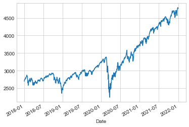
시계열 데이터를 처리할 때 일반적으로 필요한 것 중 하나는 더 높거나 낮은 빈도로 리샘플링하는 것입니다. 이는 resample 방법이나 훨씬 간단한 asfreq 방법을 사용하여 수행할 수 있습니다. 둘 사이의 주요 차이점은 resample은 기본적으로 데이터 집계인 반면 asfreq는 기본적으로 데이터 선택이라는 것입니다.
S&P 500 종가 데이터를 다운샘플링할 때 두 값이 무엇을 반환하는지 비교해 보겠습니다. 여기서는 사업연도 말에 데이터를 다시 샘플링하겠습니다. 다음 그림은 결과를 보여줍니다.
sp500.plot(alpha=0.5, style='-')
sp500.resample('BA').mean().plot(style=':')
sp500.asfreq('BA').plot(style='--');
plt.legend(['input', 'resample', 'asfreq'],
loc='upper left');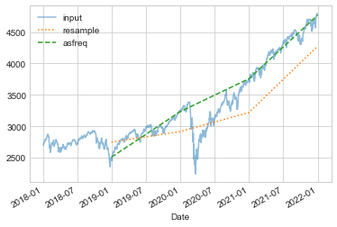
차이점에 주목하세요. 각 지점에서 resample은 이전 연도의 평균을 보고하고, asfreq는 연말의 값을 보고합니다.
업샘플링의 경우 resample과 asfreq는 대체로 동일하지만 resample에는 더 많은 옵션을 사용할 수 있습니다. 이 경우 두 방법 모두의 기본값은 업샘플링된 포인트를 비워 두는 것입니다. 즉, NA 값으로 채워집니다. 누락된 데이터 처리에서 설명한 pd.fillna 함수와 마찬가지로 asfreq는 값이 대치되는 방법을 지정하기 위해 method 인수를 허용합니다. 여기서는 영업일 데이터를 일일 빈도(예: 주말 포함)로 다시 샘플링합니다. 다음 그림은 결과를 보여줍니다.
fig, ax = plt.subplots(2, sharex=True)
data = sp500.iloc[:20]
data.asfreq('D').plot(ax=ax[0], marker='o')
data.asfreq('D', method='bfill').plot(ax=ax[1], style='-o')
data.asfreq('D', method='ffill').plot(ax=ax[1], style='--o')
ax[1].legend(["back-fill", "forward-fill"]);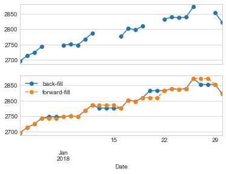
S&P 500 데이터는 영업일 동안만 존재하므로 상단 패널에는 NA 값을 나타내는 간격이 있습니다. 하단 패널에는 간격을 채우는 두 가지 전략, 즉 전방 채우기와 후방 채우기 간의 차이점이 표시됩니다.
또 다른 일반적인 시계열별 작업은 시간에 따른 데이터 이동입니다. 이를 위해 Pandas는 주어진 항목 수만큼 데이터를 이동하는 데 사용할 수 있는 ‘shift’ 메서드를 제공합니다. 일정한 빈도로 샘플링된 시계열 데이터를 사용하면 시간 경과에 따른 추세를 탐색할 수 있는 방법을 얻을 수 있습니다.
예를 들어 여기서는 데이터를 일일 값으로 다시 샘플링하고 364만큼 이동하여 시간 경과에 따른 S&P 500의 1년 투자 수익률을 계산합니다(다음 그림 참조).
sp500 = sp500.asfreq('D', method='pad')
ROI = 100 * (sp500.shift(-365) - sp500) / sp500
ROI.plot()
plt.ylabel('% Return on Investment after 1 year');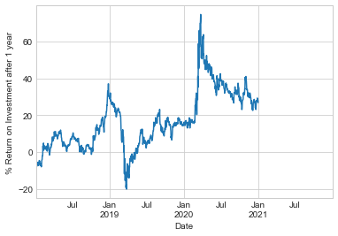
최악의 1년 수익률은 2019년 3월 경이었고, 정확히 1년 후 코로나바이러스 관련 시장 붕괴가 있었습니다. 예상할 수 있듯이, 2020년 3월에 최고의 1년 수익률을 찾을 수 있었는데, 이는 낮은 가격에 매수할 수 있는 충분한 통찰력이나 운이 있는 사람들을 위한 것이었습니다.
롤링 통계 계산은 Pandas에서 구현하는 세 번째 유형의 시계열별 작업입니다. 이는 ‘Series’ 및 ‘DataFrame’ 개체의 ‘rolling’ 속성을 통해 수행할 수 있으며, 이는 ‘groupby’ 작업에서 본 것과 유사한 보기를 반환합니다(집계 및 그룹화 참조). 이 롤링 보기에서는 기본적으로 다양한 집계 작업을 사용할 수 있습니다.
예를 들어 주가의 1년 중심 이동 평균과 표준 편차를 볼 수 있습니다(다음 그림 참조).
rolling = sp500.rolling(365, center=True)
data = pd.DataFrame({'input': sp500,
'one-year rolling_mean': rolling.mean(),
'one-year rolling_median': rolling.median()})
ax = data.plot(style=['-', '--', ':'])
ax.lines[0].set_alpha(0.3)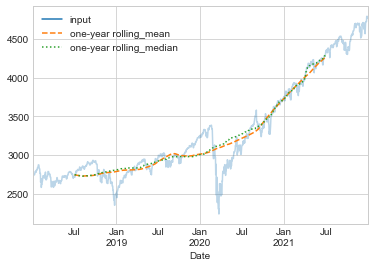
‘groupby’ 작업과 마찬가지로 ‘aggregate’ 및 ‘apply’ 메서드를 사용자 지정 롤링 계산에 사용할 수 있습니다.
이번 장에서는 Pandas가 제공하는 시계열 도구의 가장 필수적인 기능 중 일부에 대한 간략한 요약만 제공했습니다. 더 자세한 내용은 Pandas 온라인 문서의 “시계열/날짜 기능” 섹션을 참조하세요.
또 다른 훌륭한 리소스는 Wes McKinney(O’Reilly)가 쓴 책 데이터 분석을 위한 파이썬(Python)입니다. Pandas 사용에 대한 귀중한 리소스입니다. 특히 이 책은 비즈니스 및 금융 맥락에서 시계열 도구를 강조하고 비즈니스 달력, 시간대 및 관련 주제의 특정 세부 사항에 훨씬 더 중점을 둡니다.
언제나 그렇듯이, IPython 도움말 기능을 사용하여 여기에서 설명하는 함수와 메서드에 사용할 수 있는 추가 옵션을 탐색하고 시험해 볼 수도 있습니다. 저는 이것이 새로운 파이썬(Python) 도구를 배우는 가장 좋은 방법이라고 생각합니다.
시계열 데이터 작업에 대한 보다 자세한 예로 시애틀의 Fremont Bridge의 자전거 수를 살펴보겠습니다. 이 데이터는 2012년 말에 설치된 자동화된 자전거 카운터에서 나온 것입니다. 이 카운터에는 다리의 동쪽과 서쪽 보도에 유도 센서가 있습니다. 시간당 자전거 수는 http://data.seattle.gov에서 다운로드할 수 있습니다. Fremont Bridge 자전거 카운터 데이터세트는 교통 카테고리에서 사용할 수 있습니다.
이 책에 사용된 CSV는 다음과 같이 다운로드할 수 있습니다.
# url = ('https://raw.githubusercontent.com/jakevdp/'
# 'bicycle-data/main/FremontBridge.csv')
# !curl -O {url}이 데이터 세트가 다운로드되면 Pandas를 사용하여 CSV 출력을 ’DataFrame’으로 읽을 수 있습니다. Date 열을 인덱스로 지정하고 이러한 날짜가 자동으로 구문 분석되도록 지정합니다.
data = pd.read_csv('FremontBridge.csv', index_col='Date', parse_dates=True)
data.head()| Fremont Bridge Total | Fremont Bridge East Sidewalk | Fremont Bridge West Sidewalk | |
|---|---|---|---|
| Date | |||
| 2019-11-01 00:00:00 | 12.0 | 7.0 | 5.0 |
| 2019-11-01 01:00:00 | 7.0 | 0.0 | 7.0 |
| 2019-11-01 02:00:00 | 1.0 | 0.0 | 1.0 |
| 2019-11-01 03:00:00 | 6.0 | 6.0 | 0.0 |
| 2019-11-01 04:00:00 | 6.0 | 5.0 | 1.0 |
편의상 열 이름을 짧게 하겠습니다.
data.columns = ['Total', 'East', 'West']이제 이 데이터에 대한 요약 통계를 살펴보겠습니다.
data.dropna().describe()| Total | East | West | |
|---|---|---|---|
| count | 147255.000000 | 147255.000000 | 147255.000000 |
| mean | 110.341462 | 50.077763 | 60.263699 |
| std | 140.422051 | 64.634038 | 87.252147 |
| min | 0.000000 | 0.000000 | 0.000000 |
| 25% | 14.000000 | 6.000000 | 7.000000 |
| 50% | 60.000000 | 28.000000 | 30.000000 |
| 75% | 145.000000 | 68.000000 | 74.000000 |
| max | 1097.000000 | 698.000000 | 850.000000 |
데이터세트를 시각화함으로써 데이터세트에 대한 통찰력을 얻을 수 있습니다. 원시 데이터를 그리는 것부터 시작해 보겠습니다(다음 그림 참조).
data.plot()
plt.ylabel('Hourly Bicycle Count');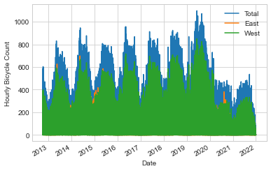
~150,000개의 시간당 샘플은 우리가 이해하기에는 너무 밀도가 높습니다. 데이터를 더 거친 그리드로 리샘플링하면 더 많은 통찰력을 얻을 수 있습니다. 주별로 다시 샘플링해 보겠습니다(다음 그림 참조).
weekly = data.resample('W').sum()
weekly.plot(style=['-', ':', '--'])
plt.ylabel('Weekly bicycle count');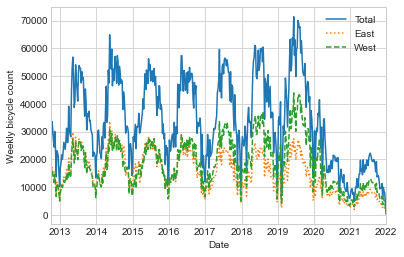
이는 몇 가지 추세를 보여줍니다. 예상할 수 있듯이 사람들은 겨울보다 여름에 자전거를 더 많이 타고, 심지어 특정 계절에도 자전거 사용은 매주 다릅니다(날씨에 따라 달라질 수 있습니다. 자세한 내용은 In Depth: Linear Regression을 참조하세요). 또한, 2020년 초부터 코로나19 팬데믹이 통근 패턴에 미치는 영향은 매우 분명합니다.
데이터를 집계하는 데 유용한 또 다른 옵션은 pd.rolling_mean 함수를 활용하여 롤링 평균을 사용하는 것입니다. 여기서는 데이터의 30일 이동 평균을 검사하여 창을 중앙에 배치합니다(다음 그림 참조).
daily = data.resample('D').sum()
daily.rolling(30, center=True).sum().plot(style=['-', ':', '--'])
plt.ylabel('mean hourly count');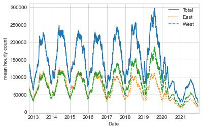
결과의 들쭉날쭉한 부분은 창의 하드 컷오프로 인해 발생합니다. 다음 그림에 표시된 것처럼 가우스 창과 같은 창 함수를 사용하여 보다 부드러운 버전의 이동 평균을 얻을 수 있습니다. 다음 코드는 창 너비(여기서는 50일)와 가우스 창 너비(여기서는 10일)를 모두 지정합니다.
daily.rolling(50, center=True,
win_type='gaussian').sum(std=10).plot(style=['-', ':', '--']);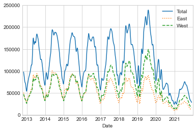
이러한 평활화된 데이터 보기는 데이터의 일반적인 추세를 파악하는 데 유용하지만 구조의 대부분을 숨깁니다. 예를 들어 하루 중 시간의 함수로 평균 트래픽을 살펴보고 싶을 수 있습니다. 집계 및 그룹화에서 설명한 ‘groupby’ 기능을 사용하여 이 작업을 수행할 수 있습니다(다음 그림 참조).
by_time = data.groupby(data.index.time).mean()
hourly_ticks = 4 * 60 * 60 * np.arange(6)
by_time.plot(xticks=hourly_ticks, style=['-', ':', '--']);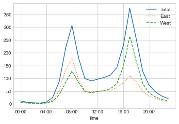
시간당 교통량은 오전 8시와 오후 5시경에 가장 많은 트래픽을 보이는 강력한 이중 패턴입니다. 이는 다리를 건너는 통근 교통량이 많다는 증거일 가능성이 높습니다. 방향성 요소도 있는데, 데이터에 따르면 오전 출퇴근 시간에는 동쪽 보도를 더 많이 사용하고, 오후 출근 시간에는 서쪽 보도를 더 많이 사용하는 것으로 나타났습니다. 갈다.
또한 요일에 따라 상황이 어떻게 변하는지 궁금할 수도 있습니다. 이번에도 간단한 groupby를 사용하여 이 작업을 수행할 수 있습니다(다음 그림 참조).
by_weekday = data.groupby(data.index.dayofweek).mean()
by_weekday.index = ['Mon', 'Tues', 'Wed', 'Thurs', 'Fri', 'Sat', 'Sun']
by_weekday.plot(style=['-', ':', '--']);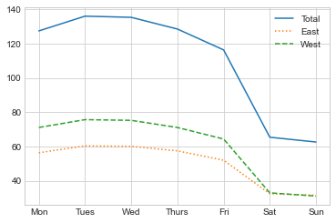
이는 주중과 주말의 총합 사이에 뚜렷한 차이가 있음을 보여주며, 토요일과 일요일보다 월요일부터 금요일까지 다리를 건너는 평균 라이더가 약 2배 더 많습니다.
이를 염두에 두고 복합 ’groupby’를 수행하여 주중과 주말의 시간별 추세를 살펴보겠습니다. 주말과 시간을 표시하는 플래그별로 그룹화하는 것부터 시작하겠습니다.
weekend = np.where(data.index.weekday < 5, 'Weekday', 'Weekend')
by_time = data.groupby([weekend, data.index.time]).mean()이제 다음 그림과 같이 Multiple Subplots에서 설명할 Matplotlib 도구 중 일부를 사용하여 두 패널을 나란히 플롯합니다.
import matplotlib.pyplot as plt
fig, ax = plt.subplots(1, 2, figsize=(14, 5))
by_time.loc['Weekday'].plot(ax=ax[0], title='Weekdays',
xticks=hourly_ticks, style=['-', ':', '--'])
by_time.loc['Weekend'].plot(ax=ax[1], title='Weekends',
xticks=hourly_ticks, style=['-', ':', '--']);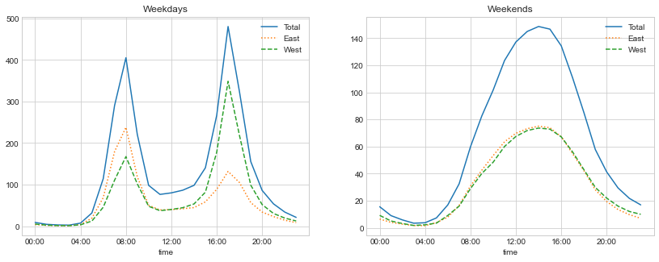
그 결과 주중에는 이봉형 통근 패턴을, 주말에는 단봉형 여가 패턴을 보여주었다. 이 데이터를 더 자세히 분석하고 날씨, 기온, 연중 시간 및 기타 요인이 사람들의 통근 패턴에 미치는 영향을 조사하는 것은 흥미로울 수 있습니다. 자세한 내용은 이 데이터의 하위 집합을 사용하는 제 블로그 게시물 “시애틀에서 사이클링이 실제로 증가하고 있습니까?”를 참조하세요. 또한 심층: 선형 회귀의 모델링 맥락에서 이 데이터 세트를 다시 살펴보겠습니다.